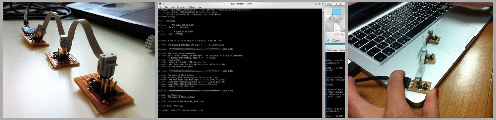

Week 13
Networking and Communications
NETWORK CONNECTING
Assignment: Design and build a wired &/or wireless network connecting at least two processors
For this assignment I used 1 Hello.bus.45.bridge and 2 hello.bus.45.node.
BRIDGE: Hello.bus.45.bridge

The bridge board has a FTDI header for the serial communication with the computer and a 4 pin header to communicate with the nodes.
NODES: hello.bus.45.node

Components:
- Resistors 10K
- Resistors 1K
- Capacitor 1uf
- Microcontroller Attiny45
- 3 Leds
- FTDI header
- Header 6 Pin
- Header 4 Pin
MILLING - WELDING:

PROGRAMMING: 
Each board needs a different node id.
For the bridge board I used as node id the number 0. I connected the bridge board to the FabISP and typed "sudo make -f hello.bus.45.make program-usbtiny". The LED should flash.
You have to repeat the same thing for the rest of the nodes.
COMUNICATIONS:

NODE 1: define node_id '1' and save the file. Connect the board to the FabISP and type "sudo make -f hello.bus.45.make program-usbtiny". The LED should flash.
NODE 2: define node_id '2' and save the file. Connect the board to the FabISP and type "sudo make -f hello.bus.45.make program-usbtiny". The LED should flash.
Now connect the boards and plug the bridge board to the computer with a FTDI cable. Connect them to Tx and Rx and flash the first node board as node 1.(type in terminal: sudo make -f hello.bus.45.make program-usbtiny). You have to repeat the same thing for the second node board as node 2
Open the Arduino IDE and go to Tools>Serial Monitor to open the serial monitor. Into the serial port enter the number of a node and "send" it. After all the LEDs light up once, the board that corresponds to the number that is entered into the serial port, should light up again.
The programming was a success.
Notes:
- Make sure the baud rate is set to 9600;
- Each board needs to have a different node id;
- Problems with noise of nodes. Using the Arduino serial monitor the nodes name showed was unusual. I checked the solders, I changed the connectors and rolled the wires. The result was just to reduce the noise.